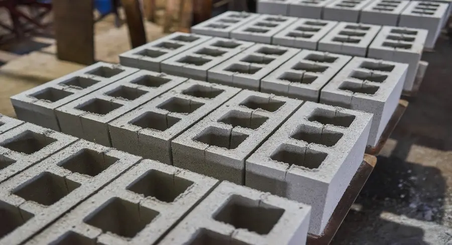
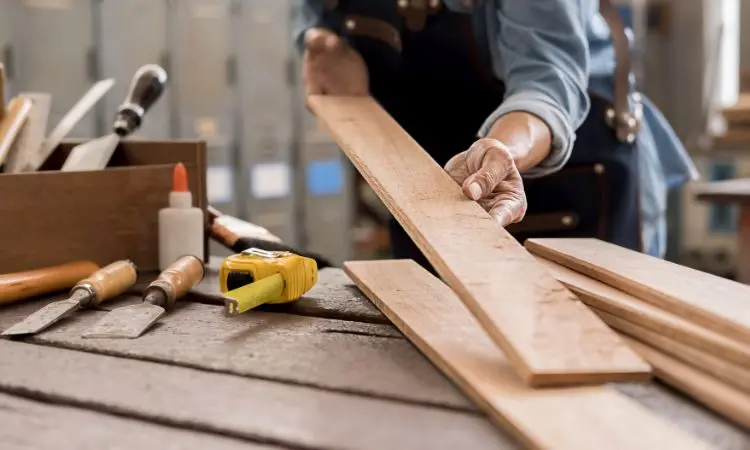
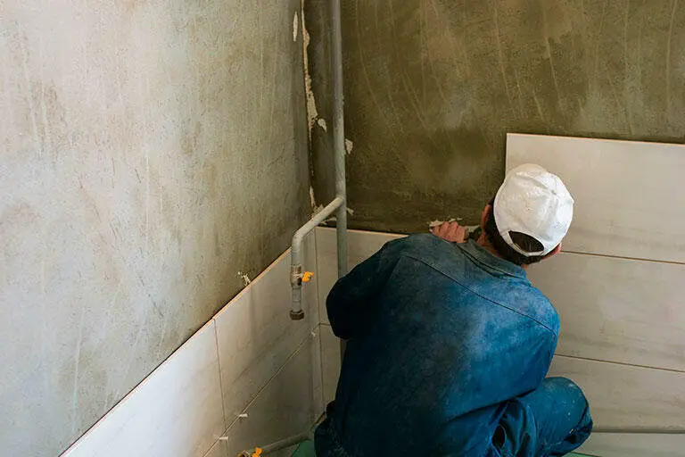
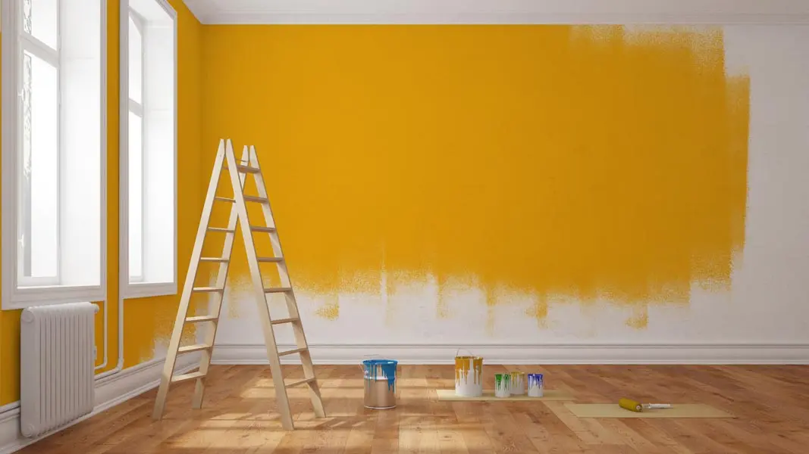

Bloque de concreto — precio directo de ferretería
El bloque de concreto precio más competitivo de Siquirres. Por unidad o por paleta, con entrega en toda la zona del Caribe Central.
📍 Centro de Siquirres, Limón
Materiales de construcción, herramientas eléctricas, plomería y pintura. Atendemos a toda la zona: Palmiras, Siquirritos y alrededores.
El mayor inventario de la zona. Bloques, cemento, varilla, arena, madera y todo lo que tu obra necesita, disponible para llevar hoy mismo.

El bloque de concreto precio más competitivo de Siquirres. Por unidad o por paleta, con entrega en toda la zona del Caribe Central.

Tuberías PVC Costa Rica en todos los diámetros: ½", ¾", 1", 2", 4". Accesorios, codos, uniones y pegamento en tienda.

Reglas, costaneras, tablones y formaleta. Todo tratado y listo para obra. Consultanos disponibilidad por WhatsApp.
Calidad sin sacrificar el bolsillo. Ofertas renovadas cada semana para maestros de obra y propietarios.
Taladros, sierras circulares y pulidoras de marcas reconocidas con garantía de fábrica al mejor precio de Siquirres.
Consultar precioPintura acrílica, látex y anticorrosivo resistentes al clima tropical del Caribe. Más de 50 colores disponibles.
Consultar precioGuías prácticas para que tu proyecto de construcción o remodelación salga perfecto.

Aprender cómo instalar cerámica en pared es más sencillo de lo que parece. Necesitás: cerámica, bondex, crucetas, nivel y espátula — todo disponible en Don Juan.
Leer más →
Saber cuánto cuesta pintar una casa depende del área, el tipo de pintura y la mano de obra. Te explicamos cómo calcular la cantidad exacta que necesitás.
Leer más →